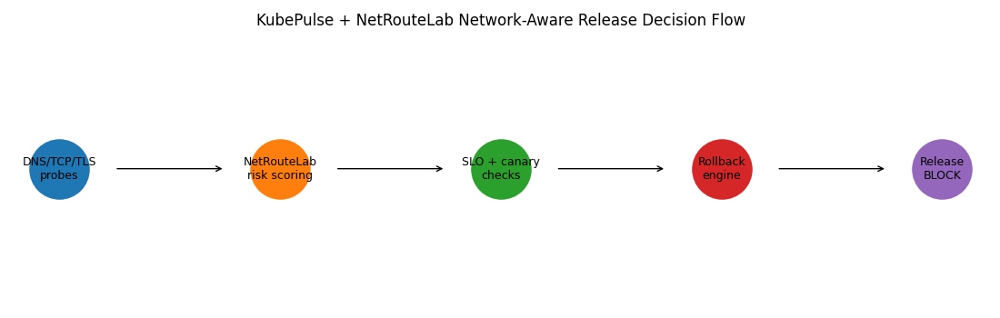
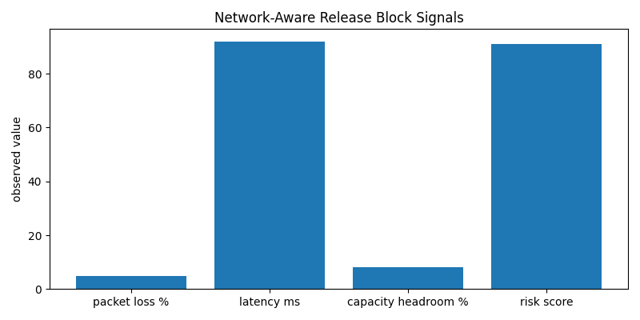

KubePulse + NetRouteLab Release Decision Report
Decision
- Safe to operate: False
- Release decision: block
- Dependency risk score: 91
- Degraded path: svc-checkout -> svc-payments
Blocked Reasons
- packet_loss_threshold_violation
- latency_threshold_violation
- low_capacity_headroom
- degraded_dependency_path
Recommended Remediation
- reroute traffic away from degraded path
- repair or replace degraded network segment
- rerun network validation before release continuation
Visuals

